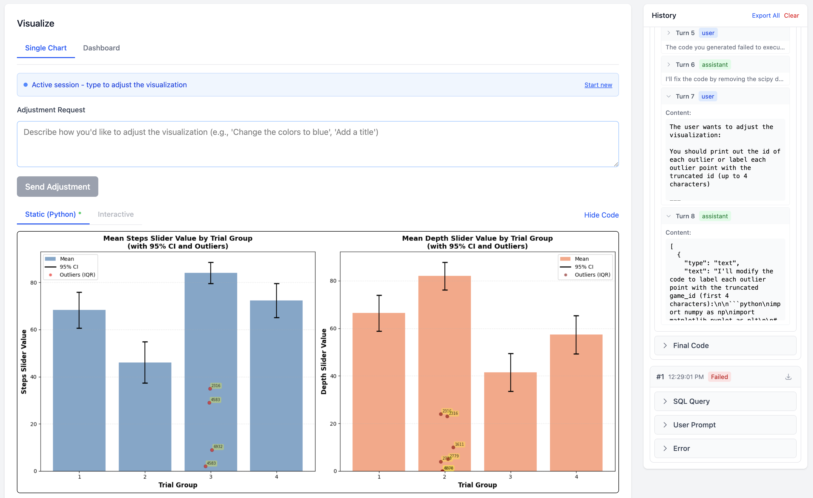
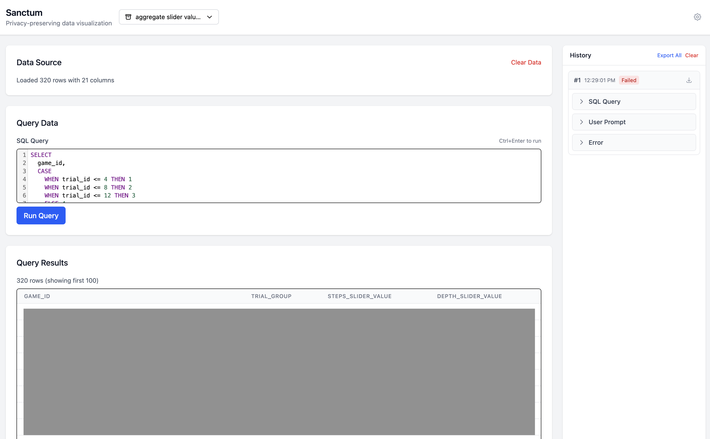
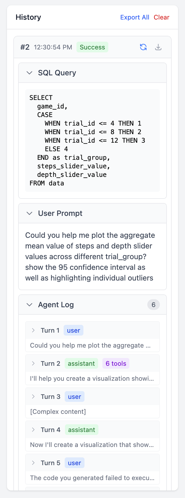
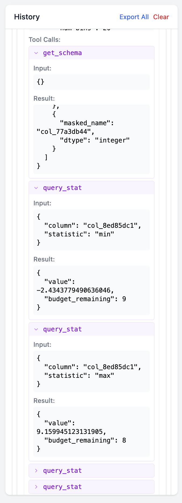
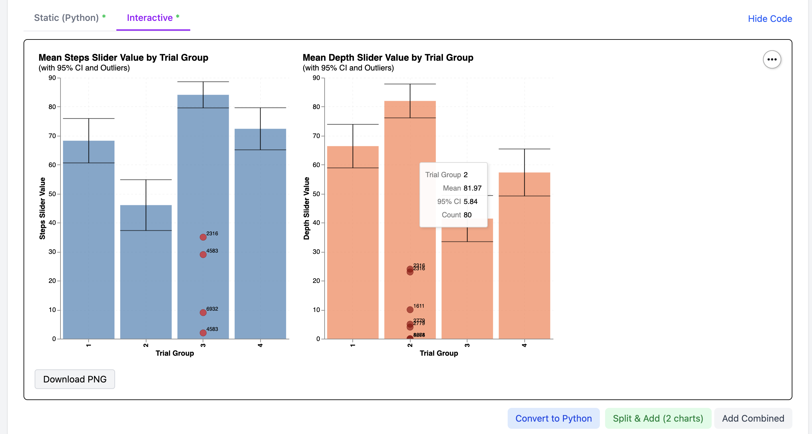
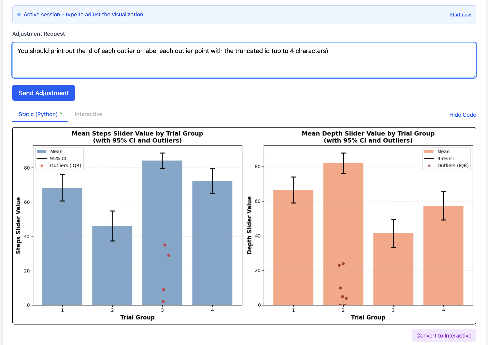
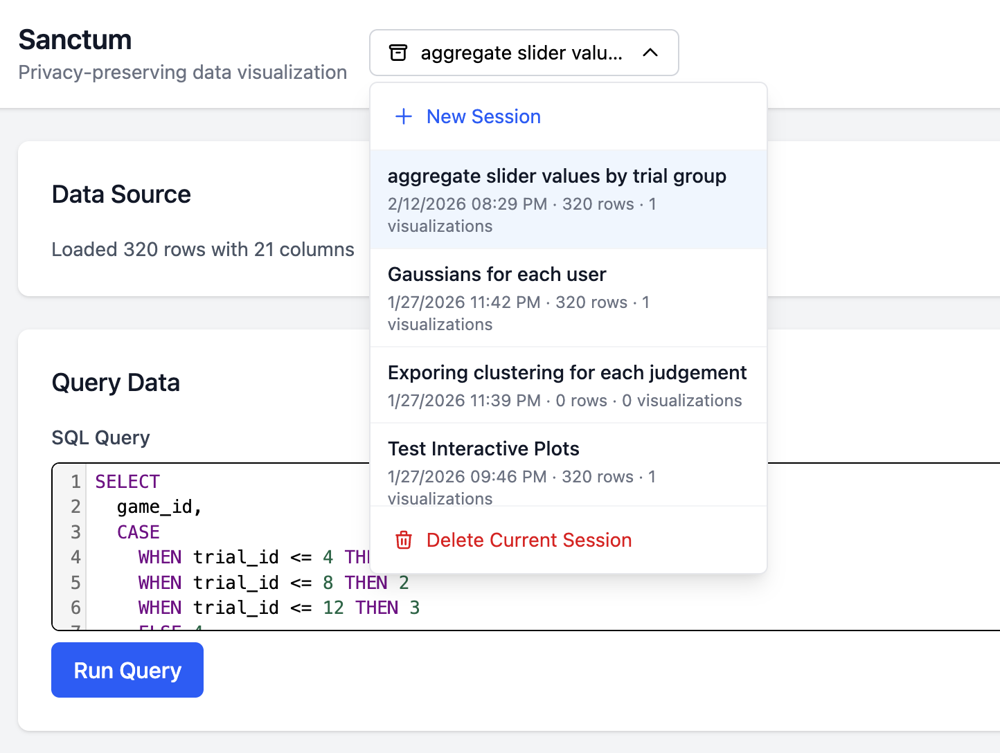

AnyPlot turns sensitive datasets into beautiful visualizations using AI — without your raw data ever leaving your machine.

All the power of AI-driven visualization, with none of the privacy trade-offs.
Your CSV is loaded into a local SQLite WASM database. Query, filter, and reshape your data with full SQL — entirely in your browser.
Column names are masked and data statistics use differential privacy. Claude never sees your actual data — just anonymized schema and noisy aggregates.
Describe what you want to see in plain English. Claude generates publication-quality matplotlib plots or interactive Vega-Lite visualizations via Altair.
Switch between static Python plots and interactive Vega-Lite charts with hover tooltips, zoom, and pan — powered by Altair.
Not quite right? Send an adjustment in natural language. The AI iterates on your visualization, fixing errors and refining details on the fly.
Generated code runs in an isolated subprocess with dangerous imports blocked. Explore fearlessly — the sandbox keeps your system safe.
Walk through the AnyPlot workflow — upload, query, visualize, and iterate.
Drop a CSV and it's instantly queryable with SQL. Shape the data exactly how you want before asking AI to visualize it. Full SQLite power, zero server round-trips.

Write a natural language prompt like "plot the mean values with 95% confidence intervals and highlight outliers." The AI agent figures out the rest — choosing chart types, computing stats, and writing the code.

Claude never sees your raw data. Column names are replaced with random hashes
(col_8ed85dc1), and the AI can only access differentially private
statistics through controlled tool calls. Your sensitive data never leaves the browser.

Every visualization is generated as both a static matplotlib plot and an interactive Vega-Lite chart via Altair. Hover for details, zoom into regions of interest, or download a publication-ready PNG.

Not perfect on the first try? Send an adjustment request in plain English: "label each outlier with its ID" or "change the colors to blue." The agent self-corrects errors and iterates until the visualization matches your vision.

Organize explorations into named sessions, each with its own queries, prompts, and visualizations. Jump between analyses, revisit past work, or start fresh — everything is persisted locally.

A three-layer architecture that keeps your data safe while giving AI full creative power.
CSVs are parsed and queried entirely in-browser using SQLite compiled to WebAssembly. Your data never touches a server.
The MCP privacy layer masks column names and serves only differentially private statistics to Claude — bounded by an epsilon budget.
Claude's generated Python code runs in a sandboxed subprocess with dangerous imports blocked.
Just Python 3.12+, Node.js 20+, and your Anthropic API key.
Open source, local-first, and built for researchers who take privacy seriously.